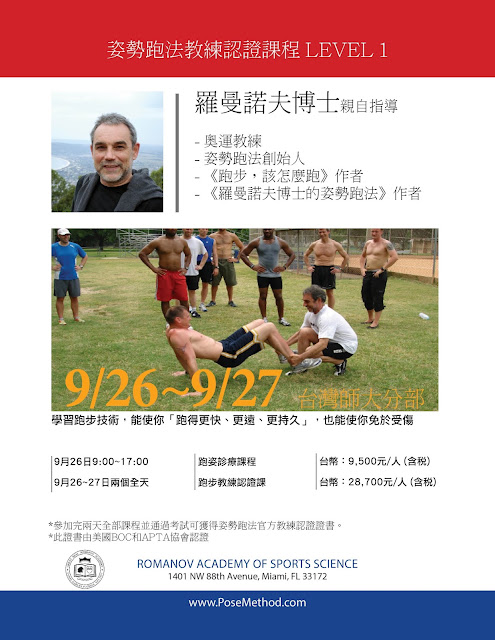
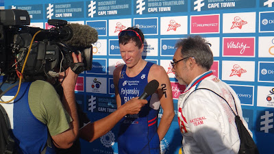
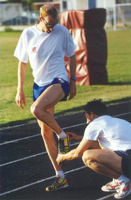
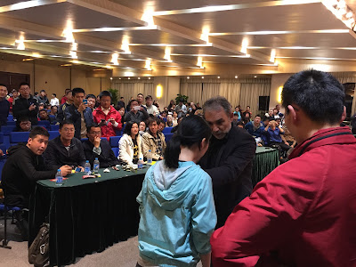
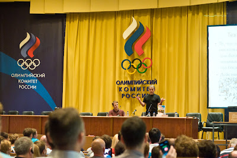
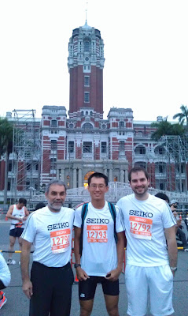
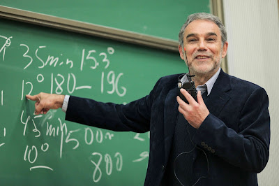
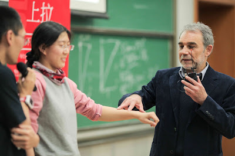
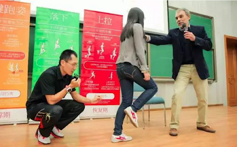

姿勢跑法教練認證課程資訊（台北站）
_一、簡介 _
跑步是目前世界上最普遍的體育活動。跑步也幾乎是每一種運動的一部分，例如足球、棒球、橄欖球等。雖然如此，大部分的人卻都曾受過跑步帶來的運動傷害。
無論你是專業或業馀的跑者，或者你正參與的體育活動會使用到跑步，無論你是體能訓練師、物理治療師、體育醫師或是一名教練，這個認證課程都很適合你。
取得認證後，你將提升專業能力、成為跑步教育工作的領航者。
人類行為中有些看似基本、簡單但卻不明顯的基本原則，例如跑步。這些原則影響速度而且也會帶來運動傷害。最大攝氧量等體能數據對於基本原則來說是次要的。學會了這些原則，你才能邁入更高一層的境界。
成為姿勢跑法（Pose Method®）認證的跑步技術專家：你將能教你的客戶、運動員、你身邊的跑步愛好者如何跑步、幫助他們跑得更快並減少運動傷害。這套教學方法是由奧運教練尼可拉斯·羅曼諾夫博士所創，姿勢跑法目前是唯一科學證明，提供你有效減少膝蓋衝擊50%的教學方法。
附：已出版的相關研究與論文條列於此（可複製到瀏覽器瀏覽）：
https://posemethod.com/published-studies-research-articles/
關於尼可拉斯·羅曼諾夫博士
尼可拉斯·羅曼諾夫博士畢業於俄羅斯體育暨運動皇家學院，是運動相關科系的領導人物、專業田徑教練、也是運動生物力學、體育教學和運動訓練上的資深講師，尤其專精於田徑的訓練理論與實際訓練法。在70年代中期，他致力於開發能夠提昇運動效率與表現的姿勢跑法（Pose Method），其中基本概念的運用範圍含括跑步、田徑、游泳、自行車、體操、競速滑輪與滑雪項目。
尼可拉斯·羅曼諾夫博士利用姿勢跑法來訓練世界各國的鐵人三項和跑步的精英選手以及業餘運動員，並曾擔任過兩屆奧運教練，分別是2000 年的悉尼奧運會與2004 年的雅典奧運會。此外，有不少他訓練出的選手也參加了2008 年北京奧運會。經過他訓練的選手中也有不少將參加2016 年的里約奧運。目前他已經出版的著作有：《跑步，該怎麼跑》（臉譜出版社2010 年出版，徐國峰譯）、《羅曼諾夫博士的姿勢跑法》（臉譜出版社2015 年8月出版，徐國峰譯）。
跟羅曼諾夫博士合作過的頂尖運動員與其成績：
名字 | 姓別 | 成績
---|---|---
Nikolay Grigorjev (俄國) | 男子 | 5公里：13分35秒 10公里：28分20秒
Valery Fedotov (俄國) | 男子 | 5公里：13分45秒 10公里：28分20秒
Svetlana Vaciljeva (俄國) | 女子 | 馬拉松：2小時20分
Susan Williams (美國) | 女子 | 二〇 〇四年雅典奧運會女子鐵人三項銅牌 在ITU的比賽中的最好成績：1小時54分
Tim Don (英國) | 男子 | 51.5標鐵最後10公里：29分50秒 3公里最佳紀錄：8分05秒
Andrew Jones (英國) | 男子 | 他是第一位在51.5標鐵中的最後十公里跑進30分的選手，也是當時的世界紀錄保持人 標鐵最後10公里：29分54秒 半馬最快成績是1小時07分
Urgen Zaak (德國) | 男子 | 226超鐵最後馬拉松跑出： 2小時45分 （他原本成績是3小時02分，學了姿勢跑法後進步到2小時45分）
_二、年齡限制 _
- 報名時，您需年滿18歲
_三、課程資訊 _
- 耗時：兩個整天。
- 時間： 09:00~17:00
註1：APTA，的全名是American Physical Therapy Association，「美國物理治療師協會」，因為姿勢跑法被公認為是最不容易受傷的跑步技術，也受到此協會的認可，也就是說APTA認為姿勢跑法的認證教練能夠協助避免運動傷害的發生。官網
註2：BOC，是Board of Certification的簡稱，是美國各式教練認證系統的統整單位，它建立一套「認證的標準稱」，讓各式運動教練的審核能夠達到一定的水準。官網
_四、課前準備 _
■ 課前閱讀教材
參加進階的認證課以前，請確認自己已經完整閱讀以下著作。這是為了確保您能夠順利吸收這門課的新知識。
- 書籍：《跑步，該怎麼跑》(The Pose Method of Running)。認識姿勢跑法的第一步你首先需要熟悉姿勢跑法的背景，包括他的歷史淵源、基本架構。最好的方式當然就是閱讀羅曼諾夫博士的著作《跑步，該怎麼跑》。
■ 考試準備教材
開始線上認證考試以前，請完整閱讀以下教材，以確保您能夠順利通過認證考試，並取得姿勢跑法教練資格。
- 書籍：《羅曼諾夫博士的姿勢跑法》(The Running Revolution)。專為跑者而寫。這本書提供教練額外的教學資訊，包括：訓練方法、創建訓練計畫、建構訓練課程。
- 影片：12週訓練計畫(線上學習頻道)。這個計畫旨在幫助任何等級的跑者轉換成姿勢跑法。它提供了清晰與詳盡的姿勢跑法原理，影片更能利用視覺化與實際應用強化學習效果。
_五、認證流程 _
這個認證流程主要是設計來幫助學員通過最後的認證考試，讓你成為名副其實的跑步技術專家。
■ 準備步驟
- 第一步：先讀完上述的課前閱讀教材。我們將提供所有讓你成為跑步技術專家、與應付線上考試所需要的教材。
- 第二步：理論與實際操作在認證課程裡都是一樣重要的。在我們教會你理論之後，你會有機會應用這些課堂學到的知識、經過研讀你將學會如何用影像分析跑姿，並且教導你自己的學生正確的跑步技術、帶他操作跑步訓鍊動作與執行肌力訓練。
- 第三步：線上測驗旨在確認你是否擁有成為一位跑步技術專家應該具備的知識、能力與技能。
_六、課程大綱 _
■ 第1天：跑姿診療課程
- 09:00-09:30 姿勢跑法簡介、跑步肌力與技術實作教學
- 09:30-10:30 基本的人體力學、跑步技術訓練動作與攝影
- 10:30-11:30 跑步技術、教學與訓練動作介紹
- 11:30-12:00 關於跑步技術的歷史
- 12:30-13:00 中午休息時間
- 13:00-14:00 影像分析
- 14:00-14:30 訓練與跑鞋
- 14:30-16:00第二次實作：技術動作訓練與拍攝跑姿
- 16:00-17:00 第二次影像分析
■ 第 2天：進階教練課程
- 09:00-10:30 常見的運動傷害
- 10:30-11:00 衝刺：起跑區的加速
- 11:00-11:30 分組與1對1指導
- 11:30-13:30 第三次實作：面對跑者的個人跑姿
- 13:30-14:00 中午休息時間
- 14:00-15:00 自己的跑步動作影片分析
- 15:00-16:00 人體力學進階分析
- 16:00-17:00第四次實作：進階與矯正技術訓練動作
- 17:00-17:30 總結：問答時間、考試註冊、教練資訊介紹
_七、常見問題 _
●Pose Method®是一個怎麼樣的組織？
答：它是一家運動技術的教學機構，主要是進行跑步、游泳、自行車、鐵人三項、體操、滑雪與溜冰的技術教學，教人如何以技術(Technique)為主軸來增進運動表現與避免受傷，從1977年成立至今，演進史請見官方傳來的圖片……
●誰適合考取這個證照？
答：學校的跑步教練、鐵人三項教練、跑步社團的團長、喜歡研究跑步技術的人，簡言之就是目前或將來會從事跑步教育工作的人。
●我一定要參加認證課程才能當姿勢跑法的認證教練嗎？
答：是的，認證課是學習教姿勢跑法不可或缺的一環，它提供你所有未來你將用到的正確教學知識。
●我可以在線上就完成認證嗎？
答：不行，認證課還包括了實際的動作操演，這是線上教學所不可取代的。
●認證課程的費用包括課前閱讀教材嗎？
答：不包括，課前閱讀教材請於上課前自行購買，並獨立完成閱讀。
●我可以只參加第一天的課程，就報名線上考試然後獲得認證教練的資格嗎？
答：不行，你一定要參加兩天完整的認證課程並通過認證考試，才能得到認證教練。
●認證課授課教練的背景是什麼？
答：授課教練是羅曼諾夫博士。他是「姿勢跑法」(Pose Method®)的創立者，曾擔任過兩屆奧運教練，分別在二〇〇〇年的雪梨奧運與二〇〇四年的雅典奧運。此外，有不少他所訓練出的選手也參加了二〇〇八年北京奧運。他的訓練的選手中也有不少好手即將參加二〇一六里約奧運。
●認證考試是當天現場註冊完考還是回家在家裡電腦考呢?
答：上課完之後，六個月之內自行上線進行考試，考試有時間限制，而且只有一次機會，建議準備好之後再登錄進行考試。
●線上考試是完全英文考試還是有翻譯呢?
答：全部是中文試題，考題由《跑步該怎麼跑》與《羅曼諾夫博士的姿勢跑法》譯者徐國峰翻譯，所有姿勢跑法的專有名詞都跟書中統一。
●簡章中的APTA是什麼？
答：APTA的全名是American Physical Therapy Association，中文的意思是「美國物理治療師協會」，因為姿勢跑法被公認為是最不容易受傷的跑步技術，也受到此協會的認可，也就是說APTA認為姿勢跑法的認證教練能夠協助避免運動傷害的發生。
●簡章中的BOC是什麼？
答：BOC的全名是Board of Certification的簡稱，是美國各式教練認證系統的統整單位，它建立一套「認證的考試標準」，讓各式運動教練的審核能夠達到一定的水準。
●目前全世界有多少位Pose Method®的認證教練？
答：目前姿勢跑法的教練主要集中在美洲和歐洲，總計拿到證照的人數有兩千多位，但亞洲的取照人數不多，我們希望能開始在亞洲培訓更多跑步教練，讓更多跑者能夠學習免於受傷的跑步技術。
●我不想成為認證教練，只是想姿勢跑法，該上哪找教練？
目前世界各地的認證教練資料(同意公開者)都在Pose Method的官網上：https://www.techniquespecialist.com/map/#!directory/map
●因為台北場有事，還有沒有其他場次可以參加？
答：今年確定的場次如下：
。【上海場】2015年9月19日、20日，報名資訊：
http://iranshao.com/pages/8
。【北京場】2015年9月12日、13日，首都體育大學，報名資訊：
http://detail.koudaitong.com/show/goods…
。【台北場】2015年9月26日、27日，師大分部，報名資訊：
http://www.don1don.com/shop/store/product/1334…
_八、台北場報名資訊 _

■ 師資
- 尼可拉斯・羅曼諾夫博士（Dr. Nicholas Romanov）-- 姿勢跑法(Pose Method® of Running)創辦人
- 瑟佛林．羅曼諾夫（Severin Romanov）-- CEO of Pose Method®
- 徐國峰-- 姿勢跑法大陸與台灣官方總教練
■ 時間
- 9/26(六)、9/27(日)，9am~5pm
■ 地點
- 國立台灣師範大學公館校區，研究大樓S101
- 地址：11677 台北市文山區汀洲路四段88號
■ 注意事項
- 現場無提供茶水及點心；
- 現場禁止錄影與錄音。
- 退費：9/6以前可退50%，9/13以前退30%，9/13以後不予退費。
■ 費用與人數限制
- Level 1 認證教練課程（9/26(六)、9/27(日)共兩個整天）：
- 上限50人
- 890美金(包括跑姿診療課程、線上認證考試與證書證) → 新台幣$28,700NT(含稅)
■ 報名方式
- don1don shop：http://www.don1don.com/shop/store/product/1334…
■ 報名日期
- 8/29(六) 08:00 - 9/24(日) 24:00
■ 聯絡方式
- 聯絡人：林小姐
- 聯絡信箱：[shasha0505@gmail.com](mailto:shasha0505@gmail.com)
■ 附：尼可拉斯．羅曼諾夫博士擔任教練與講師相關照片

【博士訓練的鐵人三項ITU選手獲獎接受採訪】

【博士為奧運跑者調整跑姿】

【博士2015年在大陸授課--講解跑步前進的力學原理】

【博士在Olympic論壇演講】

【博士2012年訪台時參加SEIKO路跑賽】

【博士2015年在大陸授課--講解跑者的前傾角度】

【博士2015年在大陸授課--講解「知覺」(peception)】

【博士2015年在大陸授課--國峰擔任現場口譯】